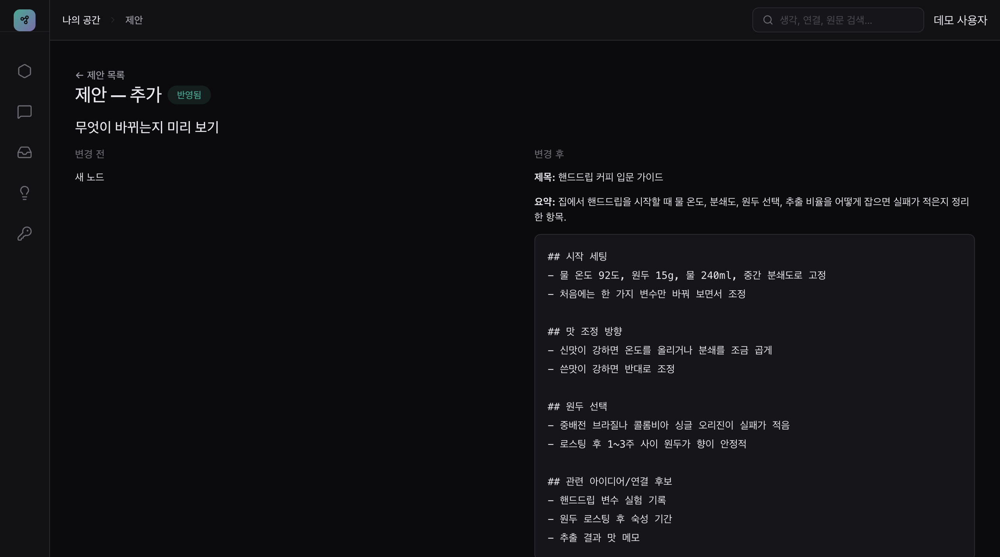
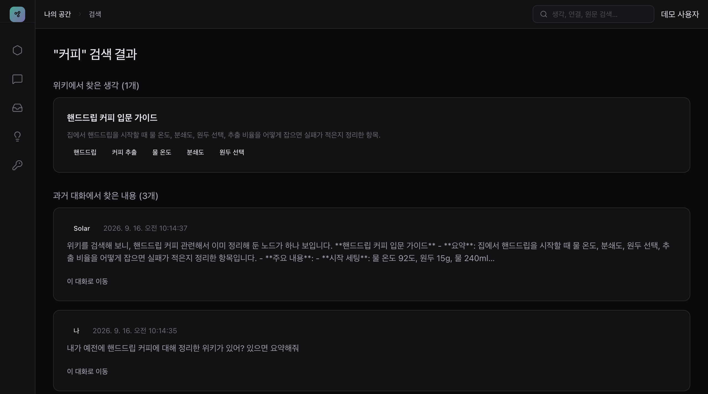
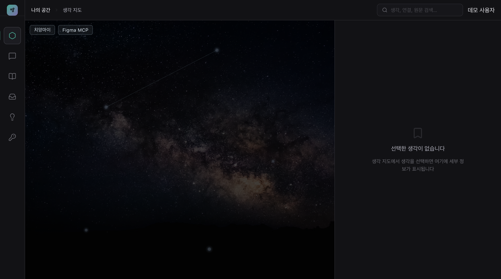
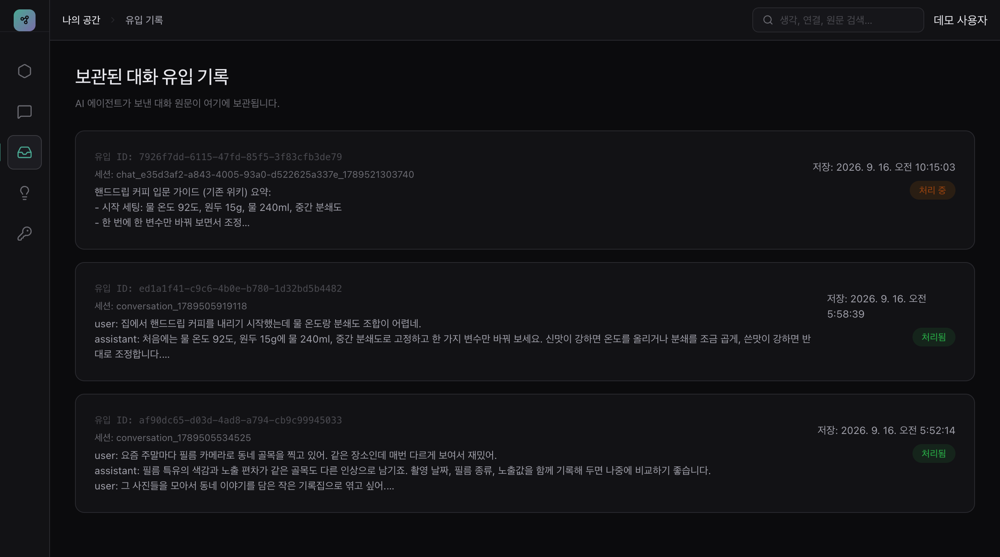
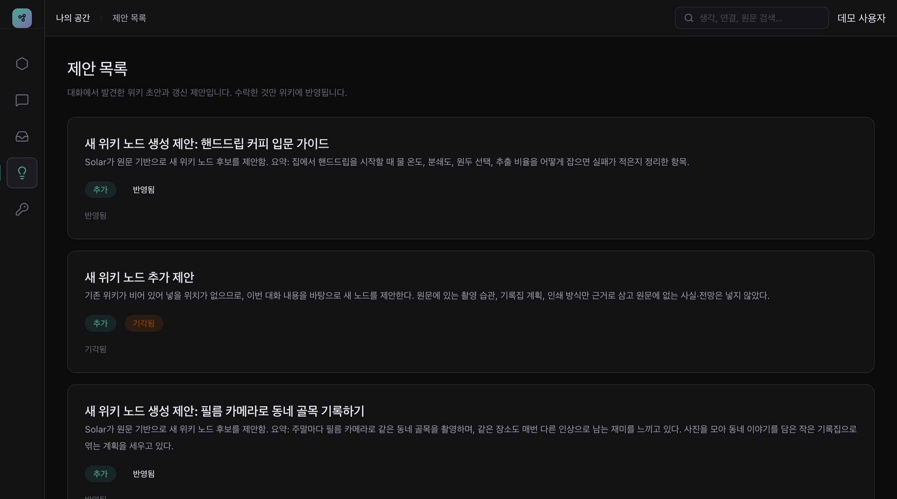
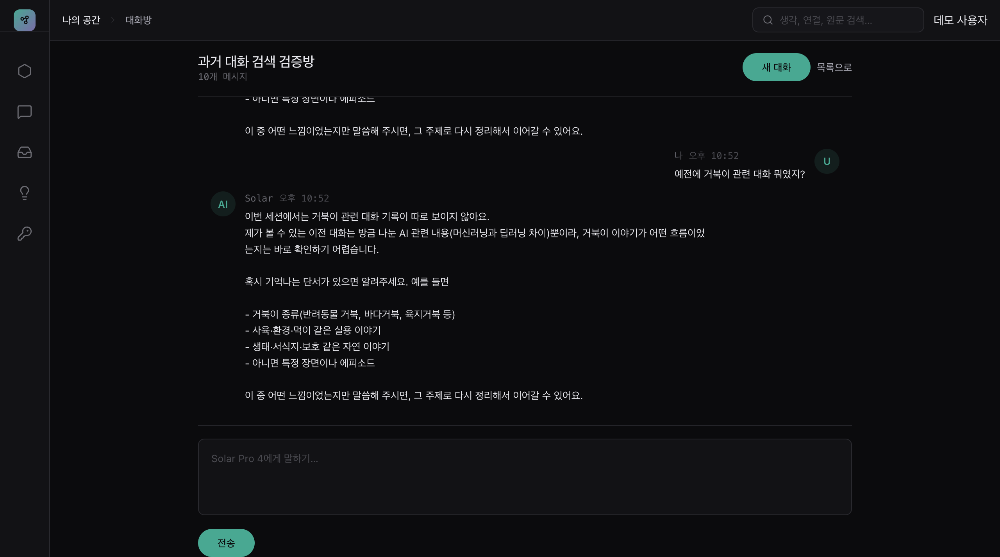
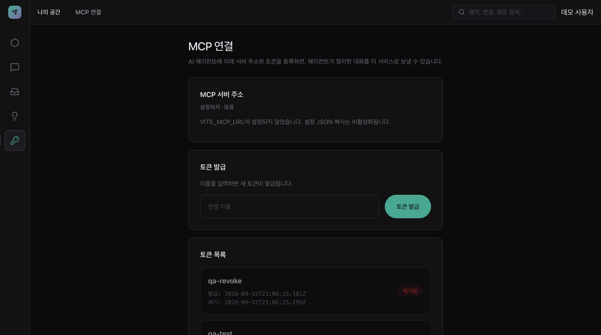

AI와 나눈 대화를 주제별 개인 위키와 생각 지도로 바꾸는 서비스.
Solar Pro 4는 초안과 갱신·연결 후보를 내고, 위키에 남길지는 언제나 사용자가 정합니다.



보관 → 후보 생성 → 제안 → 사용자 확인 → 반영. 승인 게이트를 지나지 않은 내용은 위키에 쓰이지 않습니다

에이전트에게 "위키에 저장해"라고 말하면 MCP로 그 구간이 전달됩니다. 원문은 정리본과 분리된 보관 영역에 그대로 남습니다.
Solar가 기존 위키와 대조해 신규·갱신·연결 후보를 만듭니다. 어떤 문장에서 나왔는지, 무엇이 바뀌는지 확인한 뒤 수락하거나 기각합니다.
수락한 노드와 관계만 생각 지도에 그려집니다. 노드를 누르면 정리된 내용을 읽고, 그 자리에서 대화를 이어갈 수 있습니다.
자동화는 후보를 만드는 데까지, 반영은 사람의 결정으로

제안 목록에서 유형과 상태를 한눈에 봅니다. 결정과 시각은 서버에 남아 새로고침 후에도 유지되고, 이미 결정한 제안은 다시 바꿀 수 없습니다.
키워드 하나로 승인된 위키 노드와 보관된 대화를 함께 검색합니다. 대화 결과에는 그 대화에서 만들어진 위키가 근거로 연결됩니다.

Solar와 바로 대화할 수 있고, 예전 대화나 위키를 묻는 질문에는 실제 기록을 찾아 답합니다. 대화가 곧 다음 위키의 재료가 됩니다.

외부 에이전트는 사용자별 토큰으로만 대화를 보낼 수 있고, 저장 요청이 없으면 아무것도 전송되지 않습니다. 원본과 정리본은 계정 단위로 격리됩니다.
"AI가 내 생각을 대신 정리해 두는 방향이 아니라,
AI가 후보를 내고 내가 확정해 쌓아 가는 방향"
개인 지식 도구에서 사용자 승인 통제의 설계 기준을 제안합니다